A new concept, and the quietest one yet: the paint is the design. The car wears a midnight green metallic film with real flake, almost black in the shade and deep green where the sun catches it. No pattern, no plan, no graphic: one small gold-and-cream stack on each front door, a gold SDLR monogram on each rear quarter like a coachbuilder's badge, and the logo and phone under the light bar. The car in these images is Gio's own 2025 Juniper Model Y.
Photo-style images made with Magnific (AI, Nano Banana Pro). They are concept images, not photos of the wrapped car. The side and rear images were made from Gio's own photos of his car. On the side image the AI drew the lettering too large, so it was replaced with the exact artwork at its true size. Every word was proofread letter by letter.
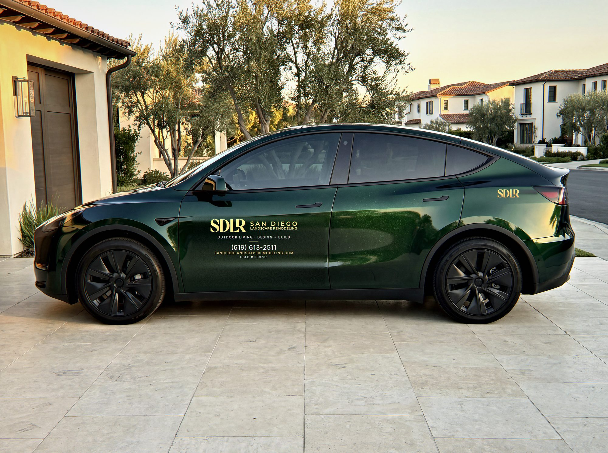
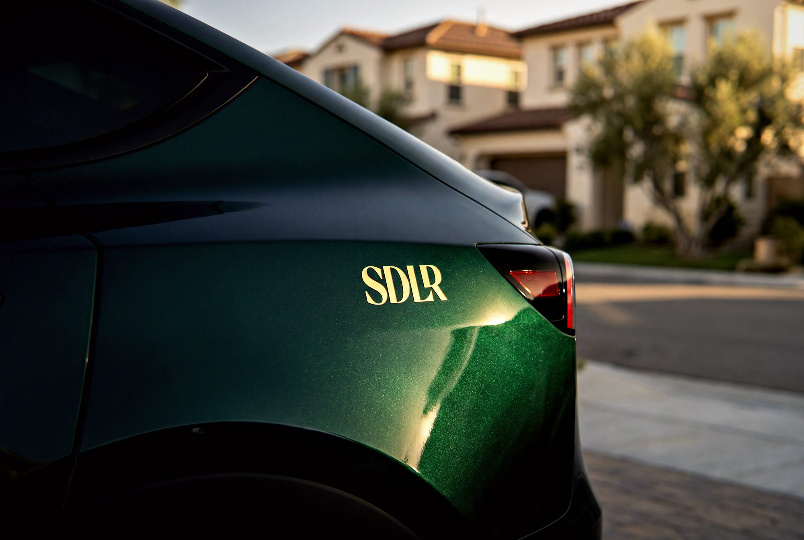
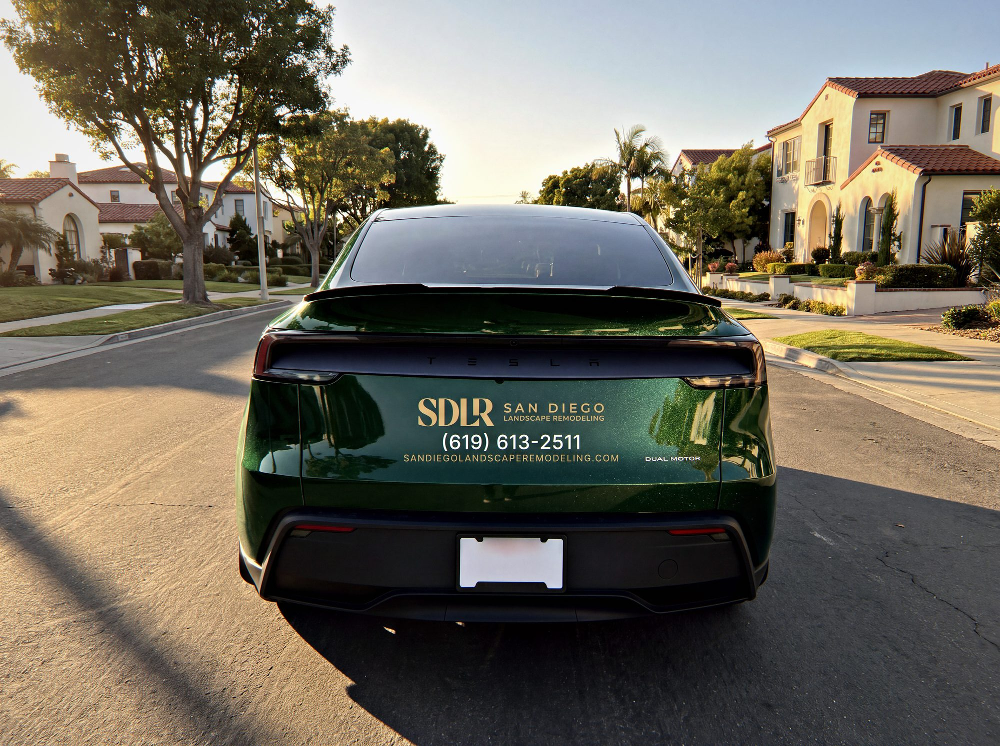
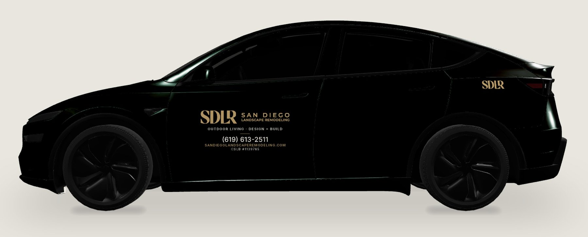
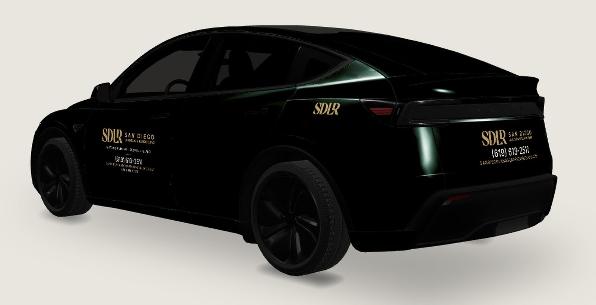
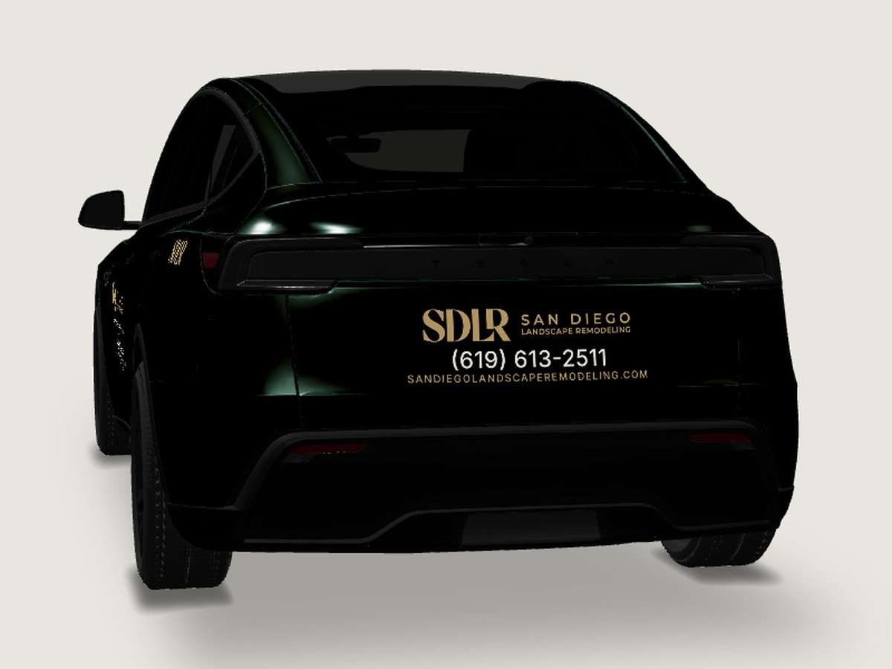
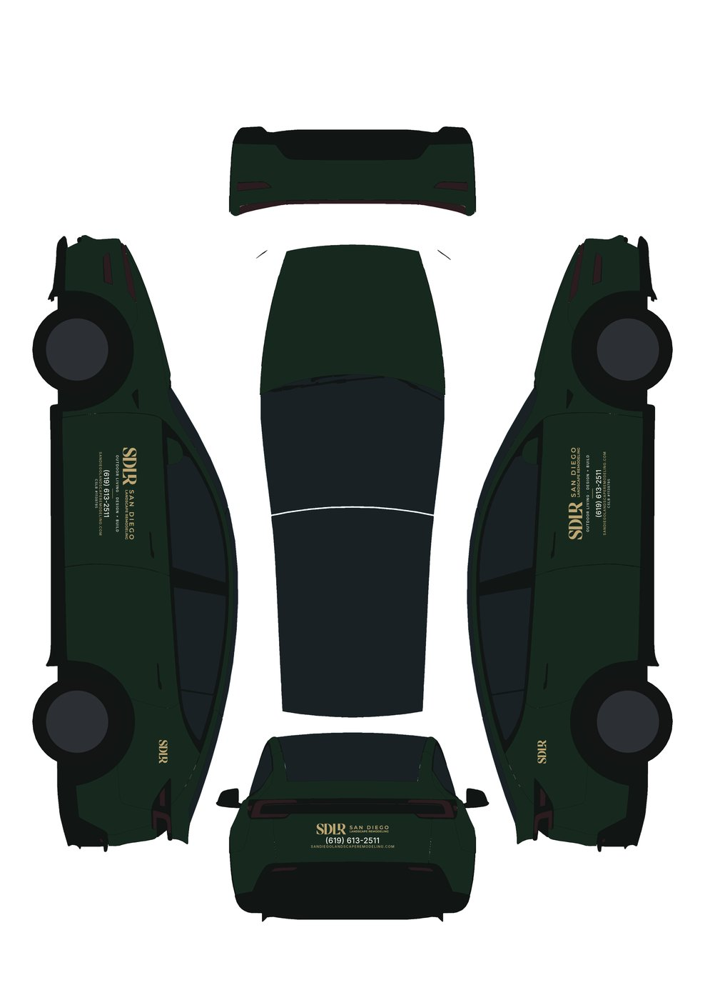
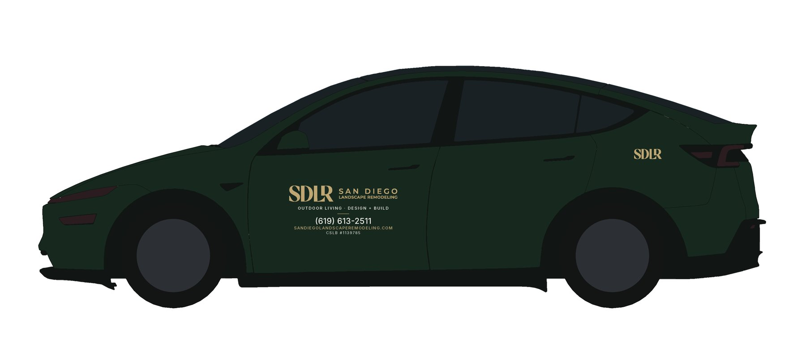
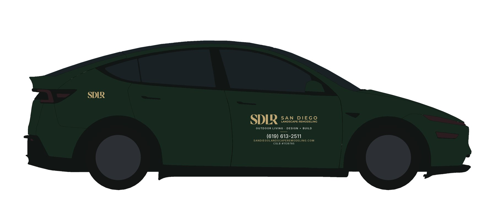
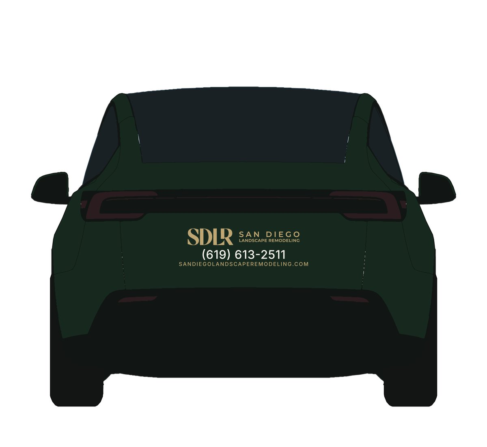
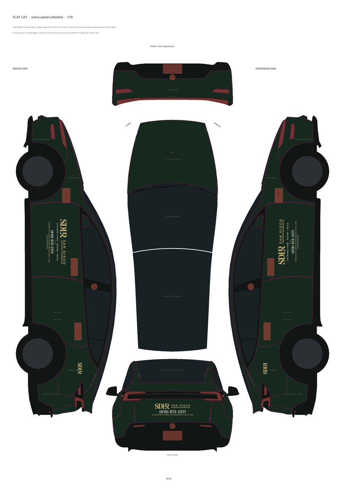
| Car | 2025 Tesla Model Y Premium AWD, the new Juniper body, with black 19 in aero wheel covers |
| Body | Midnight green metallic colour-change film with real flake: almost black in shade, deep green in the sun (samples: TeckWrap HM07 Green Black, Inozetek MSG023 Metallic Midnight Green) |
| Front doors | Centred: horizontal SDLR lockup 28 in (gold metallic vinyl) · OUTDOOR LIVING · DESIGN + BUILD (cream) · short gold rule · (619) 613-2511 (cream, 1.5 in) · SANDIEGOLANDSCAPEREMODELING.COM (gold) · CSLB #1139785 |
| Rear quarters | SDLR monogram badge, gold metallic vinyl, 2.6 in tall |
| Liftgate | Horizontal gold lockup, 22 in, then (619) 613-2511 (cream, 1.7 in) and the website, under the light bar |
| Rear glass | Clean: no vinyl |
Working files (layered .ai, print PDF at 1:10, proof PDF, README) live in Drive:
02 Clients/san-diego-landscape-remodeling/Vehicle/wrap-design/2026-11-21-v10/ (every earlier version kept beside it)